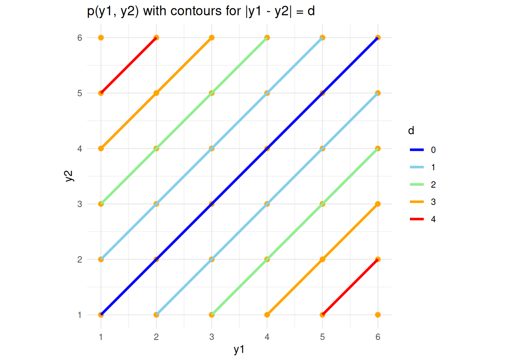

CH06: Functions of Random Variables
1 Learning Goals
- Transformations of Random Variables
- Find pdf and cdf of functions of randome variables
2 Discrete Case
Motivating Example
A coin is tossed twice. Let \(Y\) be the number of heads that come up. Find the distribution of \(X = 3Y - 1\).
Here, \(Y \sim \text{Bin}(2, 1/2)\). So
\[ p(y) = \begin{cases} 1/4, & y = 0 \\ 1/2, & y = 1 \\ 1/4, & y = 2 \\ \end{cases} \]
If \(y=0\), then \(x = -1\). If \(y=1\), then \(x = -5\). If \(y=2\), then \(x = -2\).
There is a one-to-one correspondence here between \(x\) and \(y\) values.
In general, we get the following,
Theorem 1 (Transformations on a Discrete Variables) If \(Y\) is a discrete random variable, then \(X = g(Y)\) has pmf \[p_X(x) = \sum_{y: g(y) = x} p_Y(y)\]
Example 1
Question: For \(Y \sim \text{Bin}(2, 1/2)\). Find the distribution of \(U = (Y - 1)^2\).
In this case there are two possible values of \(u\): \(0\) (if \(y = 1\)), and \(1\) (if \(y = 0 \text{ or } 2\)).
\[ B_U(0) = \sum_{y: (y - 1)^2=0} p(y) = p(1) = 1/2 \]
\[ B_U(1) = \sum_{y: (y - 1)^2=1} p(y) = p(0) + p(2) = 1/2 \]
Therefore, \(U \sim \text{Bern}(1/2)\).
Example 2
Question: If we roll two dice, what is the expected difference between the two numbers that come up?
Let \(Y_i\) be the number on the \(i\)th die. We wish to find the expected value of \(D \ lvert Y_1 - Y_2 \rvert\). We first obtain the pmf of \(D\), according to \[p(d) = \sum_{y_1, y_2: \lvert y_1 - y_2 \rvert d} p(y_1, y_2).\] This is best done graphically (see Figure 1).
Therefore, we can clearly see from the graph that,\[p(d) = \begin{cases} 6/36, & d = 0 \\ 10/36, & d = 1\\ 8 / 36, & d = 2 \\ 6 / 36, & d = 3 \\ 4/36, & d = 4 \\ 2/36, & d =5 \\ \end{cases}\] (with the sum of these probabilities to 1). It follows that
\[ E(D) = \sum_{d = 0}^5 d \cdot p(d) = \frac{35}{18} \]
Alternatiely,
\[ \begin{align} E(D) & = \sum_{y_1, y_2} \lvert y_1 - y_2 \rvert f(y_1, y_2) \\ & = \frac{35}{18} \end{align} \]
3 Continuous Case
There are three main strategies we will look at:
- The cdf method
- The transformation method (or rule)
- The mgf method
3.1 The CDF Method
Important
This consists of two steps:
- Find the cdf of the rv of interest
- Differentiate this CDF to obtain the required pdf
Example 3 Suppose that \(Y \sim U(0, 2)\). Find the pdf of \(X = 3Y - 1\).
- \(X\) has cdf
\[ \begin{align} F_X(x) & = P(X < x) \\ & = P(XY - 1 < x) \\ & = P\left( Y < \frac{x+1}{3} \right) \\ & = \int_0^{(x+1)/3} \frac{1}{2} \, dy \\ & = \frac{x + 1}{6}, \qquad -1 < x < 5 \hspace{10pt} \text{(since $3(0) - 1$ = -1 and $3(2) - 1 = 5$)} \\ \end{align} \]
- So \(X\) has pdf \(f(x) = F'(x) = \frac{1}{6}\) for \(-1 < x < 5\). In other words, \(X \sim U(-1, 5)\).
Example 4 Suppose that \(X, Y \sim ^{iid} U(0, 1)\). Find the pdf of \(U = X + Y\).
First observe that \(f(x, y) = 1\), for \(0 < x < 1\), \(0 < y < 1\).
So \(U\) has cdf Now, from the interactive figure above, we see that what we need is exactly the area bounded by the unit square and the line \(x + y = u\). Therefore, first suppose \(u < 1\), then \[ \begin{align} F(u) & = P(U < u) \\ & = P(X + Y < u) \\ & = P(Y < u - X) \\ & = \frac{1}{2}u^2 \hspace{10pt} \text{for $u \in [0, 1]$} \end{align} \] Now, suppose \(u > 1\), then more than half of the square is filled. Therefore, we can look at the not shaded part. The y-value at \(x=1\) is \(u - 1\). Since, the side lenght is \(1\), the length of the unshaded part is \(1 - (u - 1) = 2 - u\). Hence, the final area is \(1 - \frac{1}{2}(2-u)^2\). Therefore, the cdf is, \[ F(u) = \begin{cases} \frac{u^2}{2}, & 0 \leq u < 1 \\ 1 - \frac{1}{2}(2 - u)^2, & 1 \leq u < 2 \\ \end{cases} \]
Therefore \(U\) has pdf \[ f(u) = F'(u) = \begin{cases} u, & 0 \leq u < 1 \\ 2 - u, & 1 \leq y < 2 \\ \end{cases} \]
Example 5 (Example: Non-monotonic Transformation) Let \(Y \sim U(0, 1)\). Find the pdf of \(X = Y(1 - Y)\). \[ \begin{align} F(x) &= P(X < x) \\ &= P(Y(1 - Y) < x) \\ &= P(Y - Y^2 - x < 0) \\ &= P\left( \left( Y - \frac{1 + \sqrt{1 - 4x}}{2} \right) \left( Y - \frac{1 - \sqrt{1 - 4x}}{2} \right) \right) < 0 \\ &= P(Y < \frac{1 - \sqrt{1 - 4x}}{2} \text{ or } Y > \frac{1 + \sqrt{1 - 4x}}{2}) \\ &= \frac{1 - \sqrt{1 - 4x}}{2} + (1 - \frac{1 + \sqrt{1 - 4x}}{2}) \\ &= 1 - \sqrt{1 - 4x} \\ \end{align} \]
Now, the pdf is \(f(x) = F'(x) = 2(1 - 4x)^{-1/2}\).
3.2 The Transformation Method
Suppose that \(Y\) is a continuous random variable with pdf \(f(y)\), and \(x = g(y)\) is a function which is strictly monotonic, for all possible values \(y\) of \(Y\). Then \(X = g(Y)\) has pdf\[f(x) = f(y) \left\lvert \frac{dy}{dx} \right\rvert\] where \(y = g^{-1}(x)\). (This is the inverse function of \(g\))
Example 6 (Example 6) Suppose that \(Y \sim U(0, 2)\).
Find the pdf of \(X = 3Y - 1\). (The same as Example 3.)
Here \(x = 3y - 1\) is strictly increasing. Therefore \(y = \frac{x + 1}{3}\) and \(\frac{dy}{dx} = \frac{1}{3}\). Therefore, \(f(x) = f(y) \left\lvert \frac{1}{3} \right\rvert = \frac{1}{6}\), the range of \(x\) is \([-1, 5]\).
Example 7 (Example 7) \(Y \sim \mathcal{N}(a, b^2)\). Find the distribution of \(Z = \frac{Y - a}{b}\).
Note that this transformation is always strictly monotonic because it is clear that \(b\) is positive.
Then, \(y = a + bz\) and, hence, \(\frac{dy}{dz} = b\). Therefore \[ \begin{align} f(z) = f(y) \left\lvert \frac{dy}{dz} \right\rvert & = \frac{1}{b \sqrt{2\pi}} e^{-\frac{1}{2b^2} (a + bz - a)^2} \lvert b \rvert \\ & = \frac{1}{\sqrt{2\pi}} e^{-\frac{1}{2} z^2}, \hspace{10pt} -\infty < z < \infty \end{align} \]
Thus \(Z \sim \mathcal{N}(0, 1)\).
3.2.1 Special Example of Non-monotonic Transformation
Suppose \(Z \sim \mathcal{N}(0, 1)\). Find the distribution of \(X = Z^2\).
In this case, \(x = z^2\) is neither strictly increasing nor strictly decreasing. So the transformation method cannot be directly used, but a alternatives can be used. We could find the pdf of \(X\) using the cdf method. We can also use the mgf method as shown later. But before that, we need to develop an idea why transformation method even work.
Remark 1 (Why Transformation Work). Now, we can separate this into two cases — strictly increasing and strictly decreasing.
Case 1: x = g(y) is strictly increasing. This, in particular, refers to region with positive \(z\) values. \[ x = g(y) \Leftrightarrow y = g^{-1}(x) \]
Therefore, if we want to know when is \(g(y) \leq x\), we can use \(y \leq g^{-1}(x)\). Therefore,\[P(g(Y) \leq x) = P(Y \leq g^{-1}(x)) = F_Y(g^{-1}(x))\]
Hence, \[ \begin{align} f_X(x) & = \frac{dF_X(x)}{dx} = \frac{dF_Y(g^{-1}(x)}{dx} \\ & = f_Y(g^{-1}(x)) \cdot \frac{dg^{-1}(x)}{dx} \\ & = f_Y(y) \frac{dy}{dx} \\ \end{align} \]
Case 2: \(x = g(y)\) is strictly decreasing. \[ x = g(y) \Leftrightarrow y = g^{-1}(x) \]
Then similarly, we know that \(P(g(Y) \leq x) = P(Y \geq g^{-1}(x)) = 1 - F_Y(g^{-1}(x))\)
\[ \begin{align} f_X(x) & = \frac{dF_X(x)}{dx} = \frac{d}{dx}(1 - F_Y(g^{-1}(x))) \\ & = -f_Y(g^{-1}(x)) \cdot \frac{dg^{-1}(x)}{dx} \\ & = -f_Y(y) \frac{dy}{dx} = f_Y(y) \left\lvert \frac{dy}{dx} \right\rvert \end{align} \]
Note that \(\frac{dy}{dx} < 0\) as it is decreasing. Now, we have used the CDF method to essentially shows why the transformation should work.
Example 8 (The Distribution of The Square of a Standard Normal) Now, we can come back to our original problem of finding the pdf of \(X = Z^2\). From Remark 1 above and combined with Example 5, we may conject the following formula. \[ f_X(x) = \sum_{g(z) = x} f_Z(z) \left\lvert \frac{dz}{dx} \right\rvert \] which \(Z \sim \mathcal{N}(0, 1)\). Find the distribution of \(X = Z^2\).
Two roots: \(z = \sqrt{x}\) or \(z = -\sqrt{x}\). Therefore, \(\left\lvert \frac{dz}{dx} \right\rvert = \frac{1}{2\sqrt{x}}\). Therefore, \[ \begin{align} f_X(x) = \sum_{z^2 = x} f_Z(z) \left\lvert \frac{dz}{dx} \right\rvert & = \frac{1}{\sqrt{2\pi}} e^{-\frac{1}{2} x} \frac{1}{2\sqrt{x}} + \frac{1}{\sqrt{2\pi}} e^{-\frac{1}{2} x} \frac{1}{2\sqrt{x}} \\ & = \frac{1}{\sqrt{2\pi}} e^{-\frac{1}{2}x} x^{-\frac{1}{2}} \hspace{10pt} \text{for $0 < x < \infty$} \\ & = \frac{1}{\sqrt{2}\Gamma(1/2)} e^{-\frac{1}{2}x} x^{-\frac{1}{2}} \hspace{10pt} \text{for $0 < x \infty$} \end{align} \]
This is the pdf of the gamma distribution with \(a = 1/2\), \(b = 2\) such that \(X \sim Gam(1/2, 2) = \chi^2(1)\).
3.3 The Moment Generating Function Method
Recall that the mgf of a r.v. can uniquely identify the distribution of the random variable \(X\). Recall its definition being \[ m_X(t) = E\left( e^{Xt} \right) \]
Example 9 (The Distribution of The Square of a Standard Normal — Revisited) Now, we will try to use the mgf method for the same problem as above.
\[ \begin{align} m_X(t) = E\left( x^{Xt} \right) = E\left( e^{Z^2 t} \right) & = \int_{-\infty}^{\infty} e^{z^2} \frac{1}{\sqrt{2\pi}} e^{-\frac{1}{2}z^2} \, dz \\ & = \int_{-\infty}^{\infty} \frac{1}{\sqrt{2\pi}} e^{-\frac{1}{2}z^2(1 - 2t)} \, dz \\ & = c \int_{-\infty}^{\infty} \frac{1}{c\sqrt{2\pi}} e^{-\frac{1}{2c^2}z^2} \, dz \\, \hspace{20pt} \text{where $c^2 = \frac{1}{1 - 2t}$} \\ & = c \end{align} \]
The last step is true becuase it is the pdf of the random variable with distribution of \(\mathcal{N}(0, c^2)\).
Therefore, \(m_X(t) = (1 - 2t)^{-1/2}\). However, this is the mgf of \(Gam(1/2, 2)\). Therefore, it must follows the Chi-Square distribution.
Another method of working with Example 8 and Example 9 is by considering the folded normal distribution with \(Y = \lvert Z \rvert\). Its cdf is relatively easy to obtain by the symmetry of \(Z\).
Remark 2 (Yet Another Method to Arrive to Chi-Square Distribution). Therefore, from the above graph, we can obtain the following,
\[ \begin{align} F_Y(y) = P(Y < y) & = P(\lvert Z \rvert < y) \hspace{20pt} \text{(The blue region)} \\ & = P(Z < y \text{ and } Z > -y) \hspace{20pt} \text{(The blue region)} \\ & = 1 - 2P(Z > y) \hspace{20pt} \text{(Blue = 1 - 2 * Red)} \\ & = 1 - 2 (1 - \Phi(y)) \\ & = 2 \Phi(y) - 1 \\ f(y) & = F'(y) = 2\Phi'(y) = 2\phi(y) \\ \end{align} \]
Then, we can use the basic transformation that \(X = Z^2 = Y^2\) which we do not need to deal non-monotonicity as it above. Hence, \[ \left\lvert \frac{dy}{dx} \right\rvert = \frac{1}{2\sqrt{x}} \]
Therefore, \[ f_X(x) = f_Y(y) \left\lvert \frac{dy}{dx} \right\rvert = \frac{2}{\sqrt{2\pi}} e^{-\frac{1}{2}x} \frac{1}{2\sqrt{x}}, \qquad x > 0 \]
3.3.1 Two Useful Results when Applying the MGF Technique
- If \(X = a + bY\), then \[ m_X(t) = e^{at}m_Y(bt) \]
- If \(Y_1, Y_2, \ldots , Y_n\) are independent random variables and \(X = Y_1 + Y_2 + \cdots + Y_n\), then \[ m_X(t) = m_{Y_1}(t)m_{Y_2}(t) \ldots m_{Y_n}(t) \]
Example 10 \(Y \sim N(0, 1)\). Find the distribution of \(X = a + bY\).
\[ \begin{align} m_X(t) &= e^{at} m_Y(bt) \\ & = e^{at} e^{\frac{1}{2}(bt)^2} \\ & = e^{at + \frac{1}{2}b^2t^2} \\ \end{align} \]
Therefore, \(X \sim \mathcal{N}(a, b^2)\).
Example 11 Suppose that \(Y_1, Y_2, \ldots, Y_n\) are independent gamma rv’s, such that the \(i\)th one has parameters \(a_i\) and \(b\). Find the distribution of \(X = Y_1 + Y_2 + \cdots + Y_n\).
\[ \begin{align} m_X(t) &= m_{Y_1}(t) m_{Y_2}(t) \ldots m_{Y_n}(t) \\ & = (1 - bt)^{-a_1} \cdots (1 - bt)^{-a_n} \\ & = (1 - bt)^{-a} \end{align} \]
Hence \(X \sim Gam(a, b)\) where \(a = \sum_i a_i\).
Corollary 1 Since \(\chi^2\) is essentially a gamma distribution, we have \[ Y_1, \ldots , Y_n \sim^{\text{iid}} \chi^2(1) \implies \sum_i Y_i \sim \chi^2(n). \]
4 Order Statistics
Suppose that \(Y_1, Y_2, \ldots, Y_n\) are iid rv’s.
Let: \(U_1\) be the smallest of these, \(U_2\) be the second smallest and so on.
Example 12 Suppose that \(Y_1, Y_2 \sim^{\text{iid}} Exp(b)\). Find the pdf of the second order statistics, \(U_2 = \max(Y_1, Y_2)\). Also, find the expectation.
\[ \begin{align} F_{U_2}(u) = P(U_2 < u) & = P(\max(Y_1, Y_2) < u) = P(Y_1 < u, Y_2 < u) \\ & = P(Y_1 < u)^2 \hspace{20pt} \text{(by independence)} \\ & = (1 - e^{-\frac{u}{b}})^2 \\ f_U(u) &= F_{U_2}'(u) = \frac{2}{b}(1 - e^{-\frac{u}{b}})e^{-\frac{u}{b}} \hspace{20pt} u > 0 \end{align} \]
\[ \begin{align} E(U_2) & = \int_0^\infty \frac{2u}{b} e^{-\frac{u}{b}}(1 - e^{-\frac{u}{b}}) \, du \\ & = \int_0^\infty \frac{2u}{b} e^{-\frac{u}{b}} \, du - \int_0^\infty \frac{2u}{b}e^{-\frac{2u}{b}} \, du \\ & = 2 \cdot E[Exp(b)] - E[Exp(b/2)] \\ & = 2b - b/2 = \frac{3b}{2} \\ \end{align} \]
4.1 General Formula
Theorem 2 (General Formula for Order Statistics) If \(Y_1, Y_2, \ldots, Y_n\) are continuous and iid, then the pdf of the \(k\)th order statistic \(U_k\) is \[ f_{U_k}(u) = \frac{n!}{(k - 1)!(n-k)!} F(u)^{k - 1} \left( 1 - F(u) \right)^{n-k} f(u) \] where \(f(y)\) and \(F(y)\) are the pdf and cdf of \(Y_1\) respectively.
Proof. First, we will derive the cdf. For \(P(U_k < u)\), it requires essentially the \(k\)-largest value to be less than \(u\). To achieve this, we only need at least \(k\) values to be less than \(u\) out of all the order statistics. Therefore, \[ F_{U_k}(u) = P(U_k < u) = \sum_{j = k}^n \binom{n}{j} (F(u))^{j} (1 - F(u))^{n - j} \], where \(F\) is the cdf of any \(Y\) (as they are all the same).
Now, we apply the routine algebraic to obtain the pdf. Teh following is a proof provided by Stephen Ge on this blog page hosted on StackExchange. \[ \begin{align} f_{U_k}(u) & = \frac{d}{du}\left[ \sum_{j = k}^n \binom{n}{j} (F(u))^{j} (1 - F(u))^{n - j} \right] \\ & = \frac{d}{du}\left[ \left( \sum_{j = k}^{n-1} \binom{n}{j} (F(u))^{j} (1 - F(u))^{n - j} \right) + (F(u))^n \right] \\ & = \left(\sum_{j = k}^{n-1} \binom{n}{j} j f(u) (F(u))^{j-1} (1 - F(u))^{n - j} \right) \\ & \qquad - \left( \sum_{j = k}^{n-1} \binom{n}{j} (n - j) f(u) (F(u))^{j} (1 - F(u))^{n - j - 1} \right) \\ & \qquad + nf(u)(F(u))^{n-1} \\ & = \frac{n!}{(k - 1)! (n - k)!}f(u) (F(u))^{k-1} (1 - F(u))^{n - k} \\ & \qquad + \left(\sum_{j = k + 1}^{n-1} \frac{n!}{(j-1)!(n-j)!} f(u) (F(u))^{j-1} (1 - F(u))^{n - j} \right) \\ & \qquad - \left( \sum_{j = k}^{n-2} \frac{n!}{j!(n - j - 1)!} f(u) (F(u))^{j} (1 - F(u))^{n - j - 1} \right) \\ & \qquad - n f(u) (F(u))^{n-1} + nf(u)(F(u))^{n-1} \\ & = \frac{n!}{(k - 1)! (n - k)!}f(u) (F(u))^{k-1} (1 - F(u))^{n - k} \\ \end{align} \]
In the second last step, the two summations would cancel out because they form a telescoping sequence.
5 Range Restricted Distribution
Motivating Example
Suppose that the number of accidents which occur each year at a certain intersection follows a Poisson distribution with mean \(\lambda\). Find the pmf of the number of accidents at this intersection last year if it is known that at least one accident occurred there during that year. What is the expected value for that year?
Suppose \(X = (Y \mid Y > 0)\), then \(X\) has pmf for \(x \in [1, \infty)\) \[ \begin{align} p_X(x) = P(X = x) & = P(Y = x \mid Y > 0) \\ & = \frac{P(Y = x)}{P(Y > 0)} \\ & = \frac{\frac{e^{-\lambda}\lambda^x}{x!}}{1 - P(Y = 0)} \\ & = \frac{e^{-\lambda}\lambda^x}{x!(1 - e^{-\lambda})} \\ \end{align} \]
\[ \begin{align} E[X] & = \sum_x x P(X = x) \\ & = \sum_x x \frac{P(Y = x)}{P(Y > 0)} \\ & = \frac{1}{1 - P(Y = 0)} \sum_{x=1}^\infty x P(Y = x) \\ & = \frac{1}{1 - P(Y = 0)} \sum_{x=0}^\infty x P(Y = x) \\ & = \frac{1}{1 - e^{-\lambda}} E[Y] \\ & = \frac{\lambda}{1 - e^{-\lambda}} \end{align} \]
Therefore, it would then be clear that it is always higher than unconditional expectation. This makes sense as we know that it is not possible to not have any and hence increasing our expectation of the number of accidents.